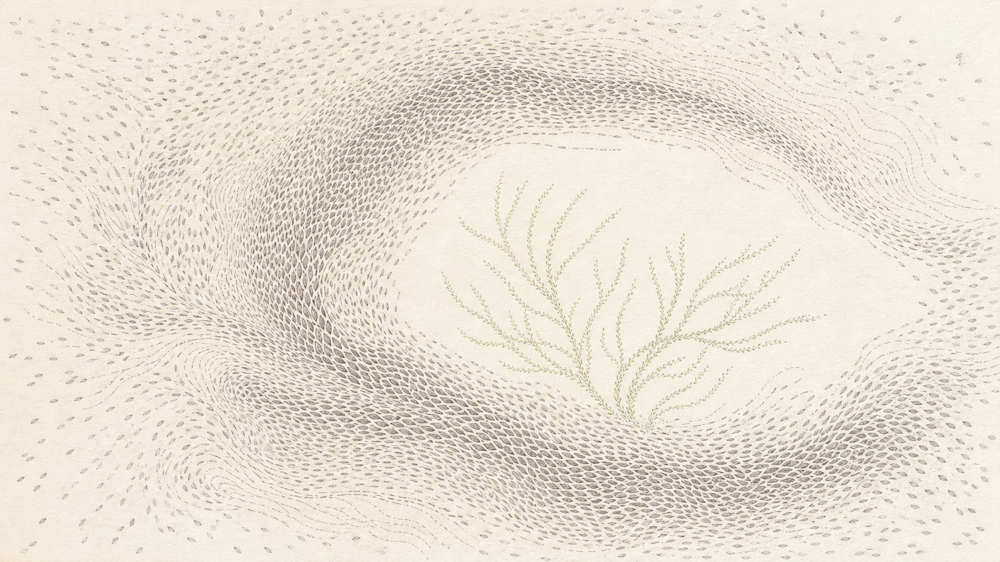

안녕하세요. dev.log입니다.
이번 주일에는 창세기 1장 26-28절을 본문으로 창조세계와 그리스도인의 책임에 관한 말씀을 들었습니다. 신도배 목사님은 폭염과 산불, 가뭄과 홍수 소식으로 설교를 여셨습니다. 기후와 생태의 위기가 이미 일상과 맞닿아 있다는 문제의식이었습니다. 그렇다면 성경이 사람에게 자연을 다스리라고 한 말씀은 자연을 마음대로 사용해도 된다는 뜻일까요.
신도배 목사님은 사람을 자연과 연결되어 있으면서도 하나님의 형상을 따라 특별한 사명을 받은 존재로 설명하셨습니다. 설교의 중심은 분명했습니다. 다스림은 착취의 권리가 아니라 하나님이 맡기신 창조세계를 경작하고 지키는 청지기의 책임이라는 말씀입니다.
이 글에서는 설교에 나온 해석과 예화를 성경 본문과 구분해 정리했습니다.
늘 그렇듯 먼저 고백하고 시작합니다. 이 글은 신도배 목사님의 설교를 제가 이해한 범위 안에서 정리한 것입니다. 저는 아직 설교의 모든 내용에 동의하는 것은 아니지만, 이번 설교가 제가 보지 못했던 책임을 어떻게 보여 주었는지 설교의 내용과 제 생각을 나누어 적어 보려 합니다.

설교 핵심 요약
신도배 목사님은 창조세계와 그리스도인의 관계를 네 가지 흐름으로 전하셨습니다.
- 사람은 땅의 흙으로 지음받아 자연과 깊이 연결되어 있지만, 하나님의 생기를 받은 영적 존재이기도 합니다.
- 하나님이 주신
정복하고 다스리라는 명령은 자연을 착취하라는 허락이 아니라, 하나님의 대리인으로서 경작하고 지키라는 청지기 사명입니다. - 죄는 하나님과 사람, 사람과 사람, 사람과 자연의 관계를 갈라놓지만, 복음은 깨어진 관계를 회복하고 만물을 화목하게 합니다.
- 창조세계를 돌보는 삶은 자연을 하나님의 선물로 기뻐하고, 작은 불편을 감수하며 일상에서 구체적으로 행동하는 데서 시작됩니다.
자연 보호는 그리스도인에게 단순한 윤리나 취향의 문제가 아닙니다. 목사님은 만물을 새롭게 하시는 하나님의 일에 참여하는 복음의 사명으로 바라보아야 한다고 강조하셨습니다.
본문 | 창세기 1:26-28 (개역개정)
본문은 하나님의 형상대로 지음받은 사람에게 창조세계를 다스리는 일이 맡겨졌다고 말합니다. 설교는 이 다스림이 무엇을 뜻하는지 창세기 2장과 십자가의 모습으로 풀어 갔습니다.
26 하나님이 이르시되 우리의 형상을 따라 우리의 모양대로 우리가 사람을 만들고 그들로 바다의 물고기와 하늘의 새와 가축과 온 땅과 땅에 기는 모든 것을 다스리게 하자 하시고
27 하나님이 자기 형상 곧 하나님의 형상대로 사람을 창조하시되 남자와 여자를 창조하시고
28 하나님이 그들에게 복을 주시며 하나님이 그들에게 이르시되 생육하고 번성하여 땅에 충만하라, 땅을 정복하라, 바다의 물고기와 하늘의 새와 땅에 움직이는 모든 생물을 다스리라 하시니라
설교 요약 - 신도배 목사님
목사님은 기록적인 폭염과 산불, 가뭄과 홍수, 바다 생태계의 변화를 언급하며 말씀을 시작하셨습니다. 생태의 위기는 책 속에만 있는 문제가 아니라 우리의 삶 한가운데에서 마주하는 현실이라는 것입니다. 이어 성경이 말하는 사람과 자연의 관계, 하나님이 사람에게 맡기신 명령, 오늘 우리가 할 수 있는 일을 차례로 살펴보셨습니다.
1. 땅에서 시작해 하나님의 호흡으로 사는 사람
창세기 2장 7절은 하나님이 흙으로 사람을 지으시고 생기를 불어넣으셨다고 기록합니다. 목사님은 사람이 자연 없이는 살 수 없지만, 자연의 일부로만 설명할 수도 없는 존재라고 전하셨습니다. 사람은 땅과 연결되어 있으면서 하나님의 형상을 따라 창조세계를 맡은 책임 있는 존재입니다.
2. 정복하고 다스리라는 명령의 뜻
창세기 1장의 정복하라, 다스리라는 말씀은 자연을 함부로 훼손해도 된다는 허락이 아닙니다. 목사님은 사랑과 희생으로 세상을 섬기신 예수님에게서 다스림의 모습을 찾아야 한다고 설명하셨습니다. 창세기 2장 15절의 경작하며 지키게 하시고라는 말씀처럼, 사람은 하나님이 맡기신 땅을 보호하고 돌보는 청지기입니다. 땅에도 안식년이 주어진 것은 사람뿐 아니라 땅에도 쉼과 회복이 필요하다는 사실을 보여 줍니다.
3. 죄가 수단으로 바꾼 관계
사람이 하나님을 떠나자 하나님과 이웃, 자기 자신, 자연과의 관계가 함께 뒤틀렸습니다. 사랑으로 섬겨야 할 대상은 복과 욕망을 채우기 위한 수단으로 바뀌었습니다. 목사님은 생태 위기의 뿌리를 기술이나 제도만의 문제가 아니라, 청지기 사명을 잃고 더 많이 소유하려는 인간의 욕망에서 찾으셨습니다.
4. 만물을 화목하게 하는 복음
복음은 깨어진 관계를 회복하며, 그 회복은 피조세계에도 이어집니다. 로마서 8장 19-21절은 피조물이 하나님의 자녀들을 기다린다고 말합니다. 골로새서 1장 20절은 십자가로 땅과 하늘의 만물이 하나님과 화목하게 된다고 전합니다. 목사님은 복음으로 새로워진 사람은 자연을 파괴의 대상이 아니라 회복시키고 살려야 할 존재로 보게 된다고 말씀하셨습니다. 창조세계를 돌보는 일은 만물을 새롭게 하시는 하나님의 일에 참여하는 복음의 책임입니다.
5. 자연을 기뻐하고 하나님을 찬양하는 돌봄
자연은 당연히 누릴 자원이 아니라 하나님이 주신 선물입니다. 목사님은 자녀의 존재 자체를 기뻐하는 부모와 시든 화분을 정성껏 돌본 권사님의 예를 드셨습니다. 돌봄은 쓸모보다 존재를 기뻐하는 데서 시작된다는 말씀입니다. 시편 8편의 다윗처럼 하늘과 달과 별을 보며 창조주를 찬양하는 마음이 창조세계를 돌보는 삶의 바탕이 됩니다.
6. 작은 불편을 감수하는 복음의 행동
창조세계를 돌보겠다는 인식은 작은 불편을 감수하는 행동으로 이어져야 합니다. 교회는 배달 음식과 일회용품을 줄이고, 분리배출을 돕고, 인쇄물을 재생 용지로 바꾸는 일을 시작했습니다. 개인도 대중교통을 이용하거나 입던 옷을 수리해 입을 수 있습니다. 이런 행동은 거대한 생태 위기 앞에서 너무 작아 보이지만, 목사님은 사명은 효과가 커 보일 때만 하는 일이 아니라고 전하셨습니다. 결과가 당장 보이지 않더라도 맡겨진 책임을 외면하지 않는 작은 순종이 창조세계를 돌보는 그리스도인의 길입니다.
Thoughts
이번 말씀을 들으며 가장 먼저 떠오른 것은 교회가 재활용과 환경을 위한 일을 시작했을 때 제가 느꼈던 불편함이었습니다. 배달 음식을 줄이고, 개인 컵을 가져오고, 화장실에서도 손수건을 사용해 보자는 요청이 이어졌습니다. 솔직히 요즘 같은 시대에 왜 이런 방식까지 해야 하나 싶었습니다.
개인이 조금 움직여 봐야 자연에 미치는 영향은 거의 없을 텐데, 너무 많은 사람이 불편을 감수하는 것은 아닌가 생각했습니다. 재활용품으로 내놓아도 실제 재활용까지 이어지는 비율이 생각보다 낮다는 보도를 본 기억도 있었습니다. 아파트 분리수거장에서는 종이와 플라스틱, 전선이 뒤섞이고, 가게에서도 분리배출이 제대로 지켜지지 않는 모습을 쉽게 볼 수 있습니다. 분리하고 씻고 떼어 내야 하는 기준은 복잡한데 실제 현장은 따라가지 못합니다. 차라리 그 비용으로 다른 처리 방식을 찾는 편이 더 효율적이지 않을까 생각했습니다.
최근 큐티(QT)를 하면서도 비슷한 반감이 들었습니다. 제가 읽은 큐티에는 이런 내용이 있었습니다.
어떤 사람들은 세상의 경제 논리를 복음 전도에 적용하려고 한다. 경제 논리는 최소의 노력으로 최대의 효과를 얻고, 최소의 투자로 최대의 이익을 얻고자 하는 사고방식이다. 이는 최소 비용의 원칙과 이윤의 극대화를 추구한다. 경제 논리를 전도에 적용하는 사람은 고생하지 않고, 손해 보지 않고 사명을 감당하려고 한다.
하나님의 마음이 계산적인 마음보다 앞서야 한다는 뜻에는 공감했습니다. 하지만 이 문장을 읽을 때는 효율을 따지는 마음 자체를 잘못이라고 말하는 것처럼 느껴졌습니다. 저는 고생이나 손해를 무조건 피하자는 것이 아니라, 같은 노력으로 더 나은 결과를 낼 수 있다면 효율도 함께 고민해야 한다고 생각했기 때문에 반감이 들었습니다.
저는 그 지점까지 쉽게 동의하지 못했습니다. 적은 비용으로 더 나은 방법을 찾는 것은 무책임이 아니라 지혜일 수 있고, 선한 의도만으로 비효율을 정당화해서도 안 된다고 생각합니다. 마음만 앞선 행동도 경계해야 한다는 생각은 지금도 남아 있습니다.
그런데 이번 설교는 제 생각을 완전히 뒤집기보다, 계산에 하나의 기준을 더해 주었습니다. 창조세계를 돌보는 일은 효과가 크다고 증명될 때만 하는 일이 아니라 하나님이 맡기신 사명일 수 있다는 점입니다. 눈에 보이는 변화가 작고 방식이 비효율적으로 보여도, 그 작은 시작을 통해 일하시는 하나님을 믿고 나라도 지키자고 움직일 명분이 생겼습니다.
이제는 재활용의 효율을 묻지 않겠다는 뜻은 아닙니다. 다만 효율이 낮아 보인다는 이유만으로 아무것도 하지 않을 근거를 만들지는 않으려 합니다. 자연을 당연히 쓰는 자원이 아니라 하나님이 맡기신 선물로 보고, 내가 할 수 있는 작은 일부터 조금 더 책임 있게 실천해 보려 합니다.
이번 말씀에 여전히 100% 공감하는 것은 아닙니다. 교회가 무엇이라도 시작해야 한다는 목사님의 마음은 이해하지만, 효과와 현실을 살피는 일도 계속 필요하다고 생각합니다. 지금 제가 얻은 결론은 효율과 사명 가운데 하나를 버리는 것이 아닙니다. 더 나은 방법을 찾는 계산은 계속하되, 계산상 작아 보인다는 이유로 창조세계를 돌보는 책임까지 포기하지 않는 것, 그 균형부터 배워 가고 싶습니다.